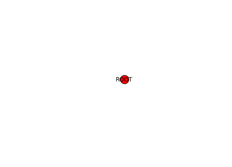
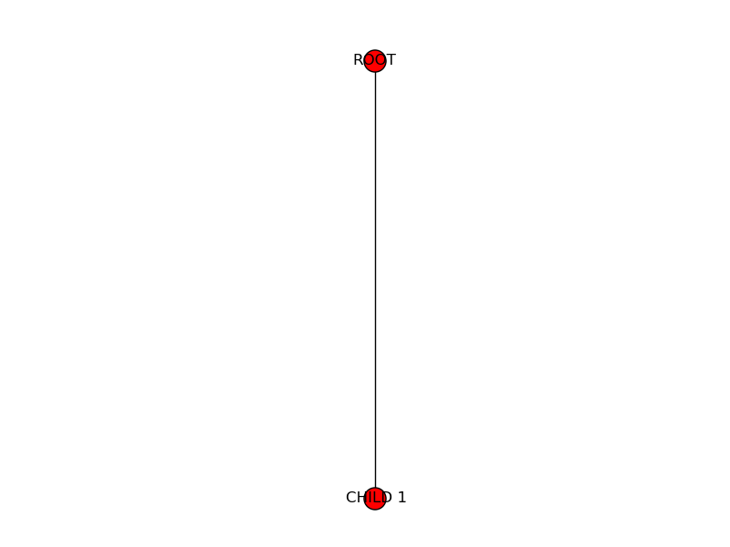
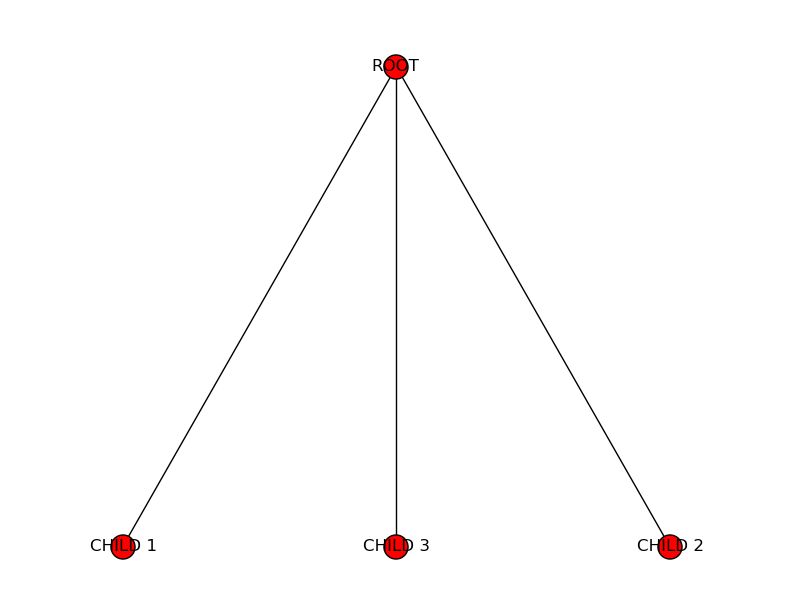
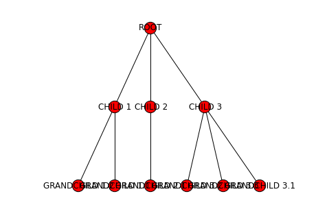
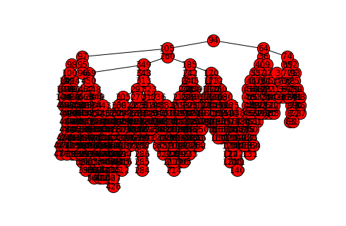
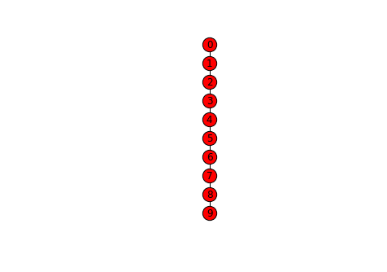

3.3. Trees
In the previous chapter, we introduced recursion as a different way of repeating operations, allowing us to write recursive algorithms to solve certain problem. Some data structures, like the tree data structure we will discuss in this chapter, also rely on recursion and, specifically, the definition of the data structure itself is recursive.
A tree is a recursively-defined data structure that has multiple applications in computing. Informally, we can think of it as a root node that has multiple nodes as “branches”, and where each of these nodes, in turn, can have “branches” of its own. More formally, a tree is a rooted acyclic undirected graph. For example, this is a tree:
Notice how there is a root node at the top (unlike real trees, computer trees are drawn with the root at the top), and this node has four “child” nodes. The right-most child node, in turn, has four child nodes of its own. Etc.
But why is this a recursively-defined data structure? If we look just at the right-most child node of the root node, we could “prune” it from the root and it would still be a tree:
So, informally, a tree is a root node that is connected to other trees. More formally, we could define a tree as…
A node with \(0\ldots N\) subtrees (or children).
Like a recursive algorithm, we have a base case and a recursive case. The base case is when we encounter a node with 0 subtrees (which is called a leaf node), and the recursive case is when we encounter a node that has other trees as subtrees.
Under this definition, when \(N=2\), we have what is called a binary tree (we will talk about these in more detail later).
Finally, it is common for each node in a tree to have one or more associated values. We will specifically consider each node to have an associated key/value pair. As we’ll see later on, there are certain algorithms that rely on trees where each node’s key is unique (but the value is not).
3.3.1. Using Trees
We are going to start by presenting trees as opaque data structures: for now,
we won’t worry about their internal representation or how they work internally, and will interact with them through an API. We provide
a tree module that contains a Tree class which we can use to work
with trees. You can find this module in our example code
under functions/trees/tree.py.
from tree import Tree
In particular, we will have access to the following methods:
# Create a tree with a root node with the given key/value pair,
# and no children. The key is required but the value is optional
# (if ommitted, it will just be None)
t = Tree(k,v)
# Properties to access the key and value of a tree (for reading and writing)
t.key
t.value
# Take an existing tree t2 and add it as a child to t
t.add_child(t2)
# Read-only property that allows us to iterate over the
# children of a tree
t.children
# Read-only property that returns the number of children a tree has
t.num_children
# Plot or print a tree
t.plot()
t.print()
Let’s create a tree (for now, we’ll leave the values blank by setting
them to None):
>>> t = Tree("ROOT")
Right now, this tree is just a single node with no subtrees:
We can add a child subtree using the add_child method:
>>> t1 = Tree("CHILD 1")
>>> t.add_child(t1)
And now we have the “ROOT” node with a single “CHILD 1” child node:
If we add two more children to the root:
>>> t2 = Tree("CHILD 2")
>>> t3 = Tree("CHILD 3")
>>> t.add_child(t2)
>>> t.add_child(t3)
Then this starts looking more like a tree:
Finally, let’s add more subtrees to the child trees we just created:
>>> t1.add_child( Tree("GRANDCHILD 1.1") )
>>> t1.add_child( Tree("GRANDCHILD 1.2") )
>>> t2.add_child( Tree("GRANDCHILD 2.1") )
>>> t3.add_child( Tree("GRANDCHILD 3.1") )
>>> t3.add_child( Tree("GRANDCHILD 3.2") )
>>> t3.add_child( Tree("GRANDCHILD 3.3") )
And the resulting tree looks like this:
We can use the print method to get a text representation
of the tree:
>>> t.print()
ROOT: None
│
├──CHILD 1: None
│ │
│ ├──GRANDCHILD 1.1: None
│ │
│ └──GRANDCHILD 1.2: None
│
├──CHILD 2: None
│ │
│ └──GRANDCHILD 2.1: None
│
└──CHILD 3: None
│
├──GRANDCHILD 3.1: None
│
├──GRANDCHILD 3.2: None
│
└──GRANDCHILD 3.3: None
Notice how, if we call this method on t1 (one of the children
of the t tree), we get only the root of t1 and its children:
>>> t1.print()
CHILD 1: None
│
├──GRANDCHILD 1.1: None
│
└──GRANDCHILD 1.2: None
If we want to do this task for every child of t, we can use the
children property to iterate over all of t’s
child subtrees:
>>> for st in t.children:
... st.print()
... print()
...
CHILD 1: None
│
├──GRANDCHILD 1.1: None
│
└──GRANDCHILD 1.2: None
CHILD 2: None
│
└──GRANDCHILD 2.1: None
CHILD 3: None
│
├──GRANDCHILD 3.1: None
│
├──GRANDCHILD 3.2: None
│
└──GRANDCHILD 3.3: None
Now, let’s say we want to write a function to process the contents of a tree in some way. Because of their recursive nature, trees are easier to process using a recursive algorithm. For example, if we wanted to print the key of every node in the tree, we would use the following function:
def traverse(t):
if t.num_children == 0:
# BASE CASE: Leaf node. Print its key
print(t.key)
else:
# RECURSIVE CASE: A node with at least one
# subtree. Print the key of the tree's root
# node, and then process the subtrees
# recursively.
print(t.key)
for st in t.children:
traverse(st)
>>> traverse(t)
ROOT
CHILD 1
GRANDCHILD 1.1
GRANDCHILD 1.2
CHILD 2
GRANDCHILD 2.1
CHILD 3
GRANDCHILD 3.1
GRANDCHILD 3.2
GRANDCHILD 3.3
In this case, we defined a base case and a recursive case that matches the recursive definition of the data structure: if we encounter a leaf node, we just print its key and we don’t need to recurse further (because there are no subtrees) but, if we encounter a tree with subtrees, we print the root node’s key, and then recursively process the tree’s subtrees.
We can also rewrite this algorithm like this:
def traverse(t):
print(t.key)
for st in t.children:
traverse(st)
>>> traverse(t)
ROOT
CHILD 1
GRANDCHILD 1.1
GRANDCHILD 1.2
CHILD 2
GRANDCHILD 2.1
CHILD 3
GRANDCHILD 3.1
GRANDCHILD 3.2
GRANDCHILD 3.3
These two implementations accomplish the exact same thing, but the second
one doesn’t explicitly separate the base case from the recursive case.
Instead, if implicitly prevents a recursive call from happening when
t is a leaf node, because t.children will return an
empty list in this case (and traverse won’t be called recursively,
since the body of the for loop will never be run).
Similarly, we can recursively compute the height of a tree, which is the longest distance (in number of edges) from the root node to any leaf node. For example, the height of this tree is three:
>>> tt = Tree("R")
>>> t1 = Tree("1")
>>> t2 = Tree("2")
>>> tt.add_child(t2)
>>> tt.add_child(t1)
>>> t11 = Tree("1.1")
>>> t12 = Tree("1.2")
>>> t13 = Tree("1.3")
>>> t1.add_child(t11)
>>> t1.add_child(t12)
>>> t1.add_child(t13)
>>> t121 = Tree("1.2.1")
>>> t122 = Tree("1.2.2")
>>> t12.add_child(t121)
>>> t12.add_child(t122)
If we wanted to compute the height of the tree, one approach we could take is to first find all the leaf nodes, compute the distance from each leaf node to the root, and then take the maximum of those distances.
However, we can solve this in a much more simple and elegant way by exploiting the recursive nature of the data structure:
Base case: A leaf node has a height of zero, because it is its own root, and thus there are no edges separating it and any other nodes.
Recursive case: If we have a tree with a root node and subtrees, then we know that the height must be at least one, because there is one edge separating the root node and each of its subtrees. We just need to find the heights of all the subtrees (by making a recursive call), find the maximum of all those heights, and add one to it.
So, we have the following:
def height(t):
if t.num_children == 0:
return 0
else:
subtree_heights = [height(st) for st in t.children]
return 1 + max(subtree_heights)
>>> height(t)
2
3.3.2. Stimulus Package data
Trees can be very useful when processing data that is structured hierarchically. For example, in February 2009, Congress passed the American Recovery and Reinvestment Act (aka “the Stimulus Package”), which provided funds for many different purposes, including infrastructure projects. The stimulus data can be viewed as a tree: the root of the tree represents the whole country, the interior nodes in the tree represent states, cities, and categories of projects, and the leaves represent specific projects.
The data about the funds allocated by the stimulus is provided in a CSV file with the following fields:
City
State
Project description
Jobs created by project
Project cost
Project program
For example, here are four entries in the file corresponding to Addison, IL:
Addison;IL;Resurfacing of approximately 10 miles of various industrial streets within the village. Our industrial streets are typical 2-lanes, 44 back to back of curb and gutter. It will be resurfaced with 1.5 inches of bituminous asphalt, some storm sewers,;60;12200000;Streets/Roads;[page]
Addison;IL;Resurfacing of approximately 10 miles of various residential streets within the village. Our residential streets are typical 2-lanes, 34 back to back of curb and gutter. It will be resurfaced with 1.5 inches of bituminous asphalt, some storm sewers,;60;4400000;Streets/Roads;[page]
Addison;IL;Resurfacing of Swift Road from US 20 to Collins Avenue, an approximate 4 mile long village minor arterial roadway with a five lane cross section (the fifth lane dedicated as a planted median strip or left turn lane) that carries about 20,000 vehicles;60;9245000;Streets/Roads;[page]
Addison;IL;Provide water to the 53 Estetes subdivision by the installation of eight inches diameter watermains and stubs, valve vaults, fire hydrants, valve boxes, bituminous patching and restoration of disturbed areas such as parkways, driveways, ditches and draina;50;4400000;Water;[page]
However, instead of processing the data row by row, we can load it into a tree and process it hierarchically. As shown in the diagram above, the root of the tree will be the US as a whole, the children of the root will be the states, the children of the state nodes will be the cities, etc. The key of each node will be a description, and the associated value for the node will be a cost.
We provide a stimulus module that includes several functions to
work with the stimulus data in a tree-like way:
import stimulus
You can find this module in our example code under functions/trees/stimulus.py.
In particular, the read_stimulus_file will return a Tree
object. We’ll start by loading just the Addison, IL data:
>>> stimt = stimulus.read_stimulus_file("data/Addison.txt")
We can now print the tree using the Tree’s print method.
We use its vformat parameter to print the node values,
which represent costs, as dollar amounts:
>>> stimt.print(vformat="${:,}")
US: $0
│
└──IL: $0
│
└──Addison: $0
│
├──Streets/Roads: $0
│ │
│ ├──Resurfacing of approximately 10 miles of various industrial
│ │ streets within the village. Our industrial streets are typical
│ │ 2-lanes, 44 back to back of curb and gutter. It will be resurfaced
│ │ with 1.5 inches of bituminous asphalt, some storm sewers,:
│ │ $12,200,000
│ │
│ ├──Resurfacing of approximately 10 miles of various residential
│ │ streets within the village. Our residential streets are typical
│ │ 2-lanes, 34 back to back of curb and gutter. It will be resurfaced
│ │ with 1.5 inches of bituminous asphalt, some storm sewers,:
│ │ $4,400,000
│ │
│ └──Resurfacing of Swift Road from US 20 to Collins Avenue, an
│ approximate 4 mile long village minor arterial raodway with a five
│ lane cross section (the fifth lane dedicated as a planted median
│ strip or left turn lane) that carries about 20,000 vehicles:
│ $9,245,000
│
└──Water: $0
│
└──Provide water to the 53 Estetes subdivision by the installation of
eight inches diameter watermains and stubs, valve vaults, fire
hydrants, valve boxes, bituminous patching and restoration of
disturbed areas such as parkways, driveways, ditches and draina:
$4,400,000
The module also includes a print_stimulus_tree function
that will print the tree in the manner shown above.
Notice how the tree includes the cost values for the individual projects, since
that’s the data contained in the file. It would be nice if we could
aggregate these values so, for example, the IL node contained the
sum of all the project nodes under it:
Because trees are a recursive data structure, we can easily implement this task with a recursive algorithm:
def aggregate_stimulus_values(t):
if t.num_children == 0:
# We've reached a leaf node. The value of the
# node will be the cost of a project
return t.value
else:
# We're not at a leaf node yet, which means
# we need to aggregate the values from all
# the child trees
total_cost = 0
for st in t.children:
total_cost += aggregate_stimulus_values(st)
# Once we have the total cost, we modify the value of this
# tree's root node to reflect that total cost.
t.value = total_cost
return total_cost
>>> aggregate_stimulus_values(stimt)
30245000
>>> stimulus.print_stimulus_tree(stimt)
US: $30,245,000
│
└──IL: $30,245,000
│
└──Addison: $30,245,000
│
├──Streets/Roads: $25,845,000
│ │
│ ├──Resurfacing of approximately 10 miles of various industrial
│ │ streets within the village. Our industrial streets are typical
│ │ 2-lanes, 44 back to back of curb and gutter. It will be resurfaced
│ │ with 1.5 inches of bituminous asphalt, some storm sewers,:
│ │ $12,200,000
│ │
│ ├──Resurfacing of approximately 10 miles of various residential
│ │ streets within the village. Our residential streets are typical
│ │ 2-lanes, 34 back to back of curb and gutter. It will be resurfaced
│ │ with 1.5 inches of bituminous asphalt, some storm sewers,:
│ │ $4,400,000
│ │
│ └──Resurfacing of Swift Road from US 20 to Collins Avenue, an
│ approximate 4 mile long village minor arterial raodway with a five
│ lane cross section (the fifth lane dedicated as a planted median
│ strip or left turn lane) that carries about 20,000 vehicles:
│ $9,245,000
│
└──Water: $4,400,000
│
└──Provide water to the 53 Estetes subdivision by the installation of
eight inches diameter watermains and stubs, valve vaults, fire
hydrants, valve boxes, bituminous patching and restoration of
disturbed areas such as parkways, driveways, ditches and draina:
$4,400,000
Now, we can run this on the entire dataset:
>>> stimt = stimulus.read_stimulus_file("data/Stimulus.txt")
>>> stimulus.print_stimulus_tree(stimt, maxdepth=2)
US: $0
│
├──AK: $0
│
├──AL: $0
│
├──AR: $0
│
├──AZ: $0
│
├──CA: $0
│
├──CO: $0
│
├──CT: $0
│
├──DC: $0
│
├──DE: $0
│
├──FL: $0
│
├──GA: $0
│
├──HI: $0
│
├──IA: $0
│
├──ID: $0
│
├──IL: $0
│
├──IN: $0
│
├──KS: $0
│
├──KY: $0
│
├──LA: $0
│
├──MA: $0
│
├──MD: $0
│
├──ME: $0
│
├──MI: $0
│
├──MN: $0
│
├──MO: $0
│
├──MS: $0
│
├──MT: $0
│
├──NC: $0
│
├──ND: $0
│
├──NE: $0
│
├──NJ: $0
│
├──NM: $0
│
├──NV: $0
│
├──NY: $0
│
├──OH: $0
│
├──OK: $0
│
├──OR: $0
│
├──PA: $0
│
├──PR: $0
│
├──RI: $0
│
├──SC: $0
│
├──SD: $0
│
├──TN: $0
│
├──TX: $0
│
├──UT: $0
│
├──VA: $0
│
├──VT: $0
│
├──WA: $0
│
├──WI: $0
│
├──WV: $0
│
└──WY: $0
>>> aggregate_stimulus_values(stimt)
149758339820
>>> stimulus.print_stimulus_tree(stimt, maxdepth=2)
US: $149,758,339,820
│
├──AK: $415,682,000
│
├──AL: $3,675,416,025
│
├──AR: $1,059,150,740
│
├──AZ: $5,574,053,214
│
├──CA: $23,194,447,835
│
├──CO: $2,447,922,036
│
├──CT: $2,650,247,958
│
├──DC: $91,700,000
│
├──DE: $52,000,000
│
├──FL: $15,644,718,735
│
├──GA: $2,622,606,973
│
├──HI: $2,390,826,455
│
├──IA: $185,815,080
│
├──ID: $884,584,750
│
├──IL: $3,108,484,657
│
├──IN: $2,598,965,295
│
├──KS: $528,306,310
│
├──KY: $1,519,552,354
│
├──LA: $3,852,297,704
│
├──MA: $1,072,920,450
│
├──MD: $405,439,000
│
├──ME: $219,461,480
│
├──MI: $2,761,766,561
│
├──MN: $983,556,849
│
├──MO: $3,760,293,491
│
├──MS: $2,433,551,064
│
├──MT: $249,272,000
│
├──NC: $1,976,159,270
│
├──ND: $95,217,000
│
├──NE: $380,458,530
│
├──NJ: $2,685,299,405
│
├──NM: $2,937,146,132
│
├──NV: $1,521,987,313
│
├──NY: $1,272,563,174
│
├──OH: $4,233,069,611
│
├──OK: $1,746,435,943
│
├──OR: $909,352,610
│
├──PA: $4,448,759,130
│
├──PR: $22,093,053,760
│
├──RI: $779,277,080
│
├──SC: $1,462,423,985
│
├──SD: $471,900,000
│
├──TN: $338,370,000
│
├──TX: $10,775,423,039
│
├──UT: $1,698,190,678
│
├──VA: $2,305,689,266
│
├──VT: $145,075,439
│
├──WA: $1,713,748,676
│
├──WI: $1,234,364,263
│
├──WV: $700,000
│
└──WY: $150,636,500
3.3.3. Internal representation
So far, we have been working with trees by using a Tree
class with a series of methods and properties that are useful
when writing tree-based algorithms. But how do we represent
trees internally? Earlier, we defined a tree as…
A node with \(0\ldots N\) subtrees (or children).
We also said that we would consider each node in a tree to
store a key/value pair. So, a Tree object t must contain the information about
that tree’s root node, and references to the other
Tree objects that are t’s child subtrees. We can do this
with three private attributes:
_k: The key of the root node_v: The value of the root node_children: The list of child subtrees.
Whenever we create a Tree object, we’re creating a single node
with no children (so the _children list will be empty). To build
the rest of the tree, we add other Tree objects to the _children
list by using the add_child method, which simply does the following:
def add_child(self, other_tree):
self._children.append(other_tree)
Let’s take a look at the tree we created earlier:
>>> t.print()
ROOT: None
│
├──CHILD 1: None
│ │
│ ├──GRANDCHILD 1.1: None
│ │
│ └──GRANDCHILD 1.2: None
│
├──CHILD 2: None
│ │
│ └──GRANDCHILD 2.1: None
│
└──CHILD 3: None
│
├──GRANDCHILD 3.1: None
│
├──GRANDCHILD 3.2: None
│
└──GRANDCHILD 3.3: None
We can see that its _children attribute is a list with three
Tree objects (corresponding to CHILD 1, CHILD 2,
CHILD 3):
>>> t._children
[<tree.Tree object at 0x7175a738bb00>, <tree.Tree object at 0x7175a7a3a6f0>, <tree.Tree object at 0x7175a7a3a3c0>]
If we look at its first child’s _children attribute, we
will see it is a list with two Tree objects (corresponding
to GRANDCHILD 1.1 and GRANDCHILD 1.2):
>>> t._children[0]._children
[<tree.Tree object at 0x7175a7447980>, <tree.Tree object at 0x7175a71eaa50>]
And if we look at the _children attribute of either of those
trees, we will see they contain empty lists, because they are
leaf nodes:
>>> t._children[0]._children[0]._children
[]
>>> t._children[0]._children[1]._children
[]
So, the recursive nature of the tree data structure is embodied
in the _children attribute, which can contain other Tree
objects which, in turn, can contain other Tree
objects, etc. However, we do not access values in the tree
by writing endless chains of ._children[] expressions. Instead,
we exploit the recursive nature of the data structure to
write recursive algorithms.
While the above representation could be enough in many cases, it would not be enough to represent represent \(n\)-trees: trees where every node has exactly \(n\) subtrees. However, this would seem to prevent us from ever reaching a leaf node (which have no subtrees). An \(n\)-tree is actually defined as being:
The null tree, or
A node with \(n\) subtrees.
In this definition, a “null tree” is similar to having a null set:
it is a tree composed of zero nodes. A leaf node is then defined
as a single node where all \(n\) subtrees of the leaf node
are null trees. Our implementation of the Tree class, a null
tree is simply a Tree object with all its attributes
(_k, _v, and _children) set to None.
Our implementation, however, does not require using \(n\)-trees.
In fact, notice how none of the examples we have seen so far actually
involved using null trees. However, if we wanted to use our Tree
class to work with an \(n\)-tree, we would just need to make sure
that every time we create a Tree, we initialize its list of children
with null trees. We will see an example of this in the next section,
where we will discuss a special kind of \(n\)-tree where \(n=2\):
binary search trees.
3.3.4. Binary Search Tree
A binary search tree, or BST, is a particular type of tree that has a number of interesting properties. It is a particular case of the general tree we’ve seen so far, but where every tree always has two child trees. We refer to these as the left child and the right child, and either or both of these child trees can be null.
Binary search trees also have the following property:
Given a non-null tree with key \(k\), all the nodes in the left child must have keys that are strictly less than \(k\), and all the nodes in the right child must have keys that are strictly greater than \(k\).
For example, this is a valid BST:
But this is not:
Why? Key 47 appears on the right child of 50, which violates the
BST property. Notice how, if we looked at the right child in isolation
(i.e., a tree rooted at 90), that tree would be a valid BST.
The operations on a BST are similar to those on a general tree, except
we have to make sure the BST property is always maintained. So, for
example, we can’t create subtrees in arbitrary places like we did with
the add_child method. Instead, we have a BST-specific insert
method that inserts a key into the tree in such a way that the
BST property is maintained. In the following examples, we will
be using a bst module that you can find in our example code
under functions/trees/bst.py.
from bst import BST
bt = BST()
bt.insert(50, "fifty")
bt.insert(30, "thirty")
bt.insert(5, "five")
bt.insert(20, "twenty")
bt.insert(90, "ninety")
bt.insert(70, "seventy")
bt.insert(110, "one hundred and ten")
>>> bt.print()
50: fifty
│
├──30: thirty
│ │
│ ├──5: five
│ │ │
│ │ ├──NULL
│ │ │
│ │ └──20: twenty
│ │ │
│ │ ├──NULL
│ │ │
│ │ └──NULL
│ │
│ └──NULL
│
└──90: ninety
│
├──70: seventy
│ │
│ ├──NULL
│ │
│ └──NULL
│
└──110: one hundred and ten
│
├──NULL
│
└──NULL
Notice how all the leaf nodes have two null trees as children.
The BST property means that searching in trees is much more efficient than searching in lists, because we can progressively divide the search space in two, just like we did when using binary search. In fact, the algorithm to search a BST is binary search, except instead of splitting a list in two, we decide to look in either the left subtree or the right subtree.
The following is the implementation of the find method. The
__left and __right properties in this code refer to
the left and right subtree of the current tree.
def find(self, k):
"""
Finds a node with a given key in the tree.
If such a key exists, it returns a tuple with
True and the value associated with that key.
Otherwise, it returns (False, None)
"""
if self.is_null():
return (False, None)
if k < self.key:
return self.__left.find(k)
elif k > self.key:
return self.__right.find(k)
elif k == self.key:
return (True, self.value)
>>> bt.find(90)
(True, 'ninety')
>>> bt.find(45)
(False, None)
>>> bt.find(51)
(False, None)
To compare the performance of a list versus a tree, let’s let’s create a list with 100,000 random integers, and then insert those integers into a BST:
import random
MAXSIZE = 100000
nums = list(range(MAXSIZE))
random.shuffle(nums)
numst = BST()
for i in nums:
numst.insert(i, None)
Now, we can use IPython’s %timeit to compare how
long it takes to find random values inside the list
and inside the BST:
In [1]: %timeit nums.index(random.randint(0,MAXSIZE-1))
1000 loops, best of 3: 749 µs per loop
In [2]: %timeit numst.find(random.randint(0,MAXSIZE-1))
100000 loops, best of 3: 11.1 µs per loop
Finding in an unsorted list takes linear time: we may have to search all the way to the end of the list to find the value we’re looking for. Finding in a tree takes logarithmic time, since we can use binary search to divide the search space in half in each step.
However, this requires loading all the data into the tree first. Inserting \(n\) values into a BST takes \(O(n\cdot \log_2 n)\) time (each individual insertion takes \(O(\log_2 n)\) time), while inserting \(n\) values into a list takes \(O(n)\) time. Of course, if we’re going to perform many search operations, the increased cost of loading the data into the tree (which is a one-time operation) may be worthwhile.
There is a caveat, though: finding an element in a tree takes \(O(\log_2 n)\) if the tree is balanced. A tree is said to be balanced if the difference in the height of left and right subtree is not be greater than 1. The insertion algorithm we’ve implemented in our BST does not guarantee this property. In fact, our trees will usually look like this:
And, in the worse case scenario, if we insert all the values into the tree in order, we could end up with a tree that looks like this:
In the above tree, all the left subtrees are null, which means we’ve effectively ended up with a list. While our BST implementation makes no attempt to keep the tree balanced, there are other types of BSTs (such as AVL trees or Red-Black trees) that keep the tree balanced, at the expense of more complex insertion algorithms.